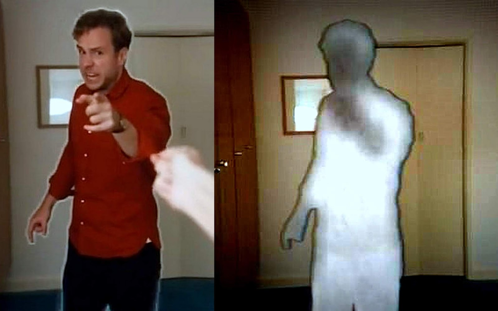
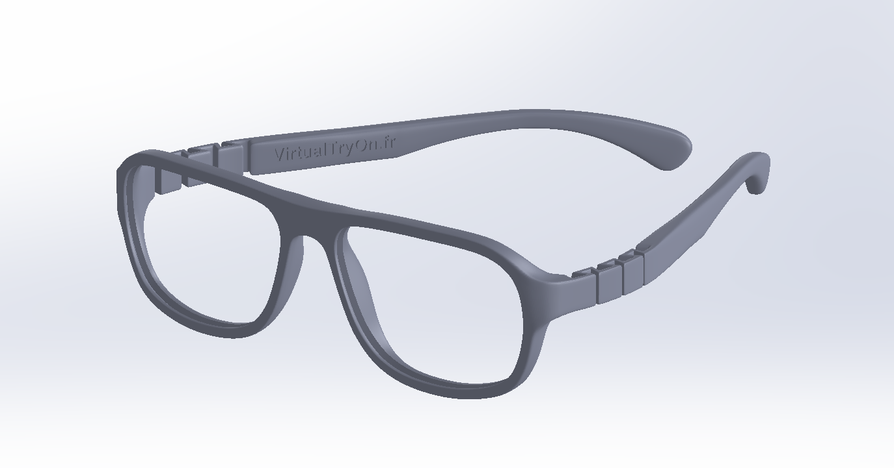
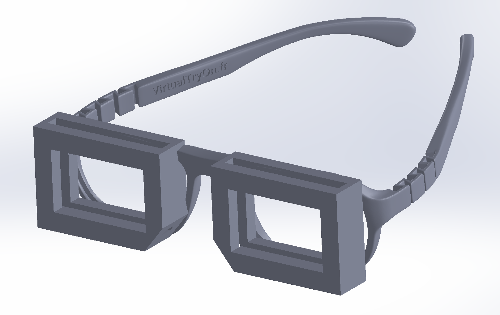
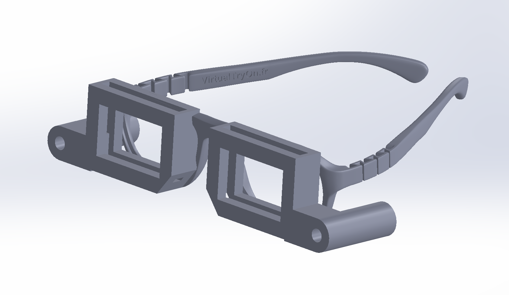
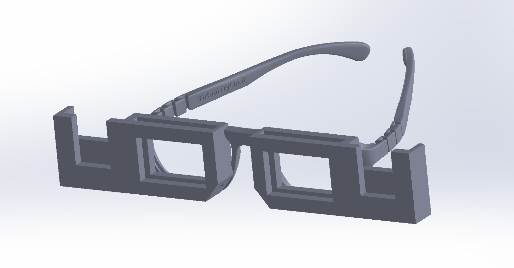

This week we prepare a 3D model of the part we want printed. I was originally planning to do a final project based on making a device that emits smells based on what shows up in a movie, however after talking with a friend I came up with a better idea - the CensorGlass.
Today we have a big problem in society - despite having the ability to censor things online that may be problematic or offensive, and allowing people options to block individuals they don't want to interact with, once we go out into the real world we lose all of that protection. We have to endure the world as it is and can't simply customize what we can and can't see. I want to solve this problem by creating a device that allows for censorship in real life, namely the CensorGlass.
Similar to the infamous Google glass, the CensorGlass creates an Augmented Reality experience by blocking out objects that are selected to be censored. The device works by overlaying a clear OLED display in front of your eyes and having a camera track objects to be sensored, activating pixels in front of the object. The applications of such a device are endless, allowing you to block people you don't like (similar to in Black Mirror), to censoring out imaging or writing that might be personally offensive to you. Additionally, this device can in theory be very useful to governments such as that of China, allowing it to not only control what its people see online, but in real life as well.
Getting back to the task at hand, a major part of this project is the frame that will hold the full assembly - namely glasses that hold the OLED display and the usb camera that tracks censored objects. For this I started with a 3D model of 3d printed glasses that I found online here. I chose this one since it was a single piece which makes it easier to work with.



After importing the file as a solidworks part, I added two square brackets in front of the lenses to hold the OLED displays. Unfortunately there was no information online about the thickness of the glass for the displays (only dimensions for the area), so I made the gap where the glass would be 5mm since its better to overestimate than underestimate the thickness. Afterwards I designed holes on the side to hold the end of a usb camera I found online, however I realized it was an endoscope and was meant for close images and probably would be out of focus for further out objects. For that reason I redesigned the glasses for a different camera with a bulkier form factor but a wide angle lense.
The STL file for the completed model can be found here.